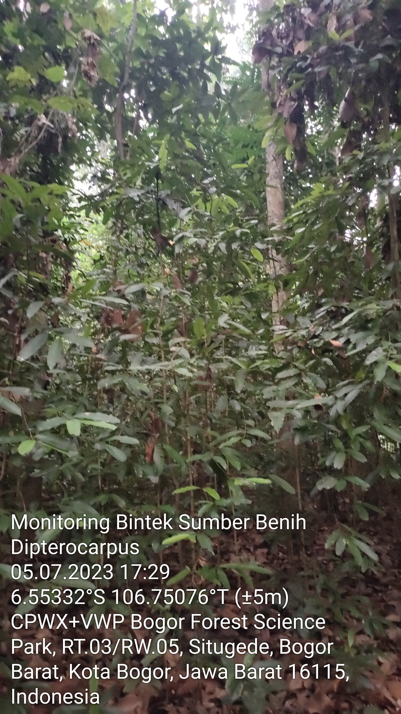
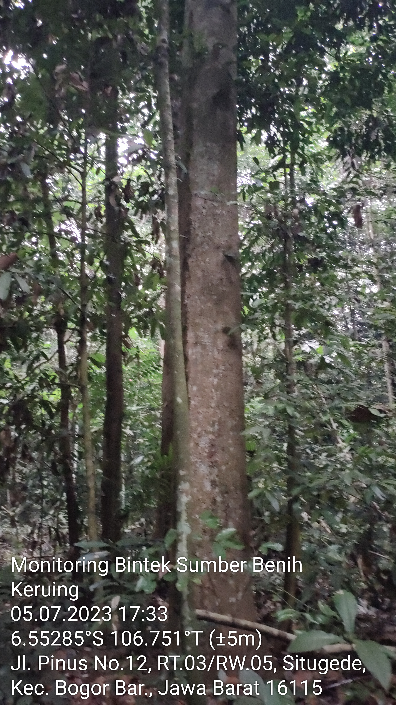
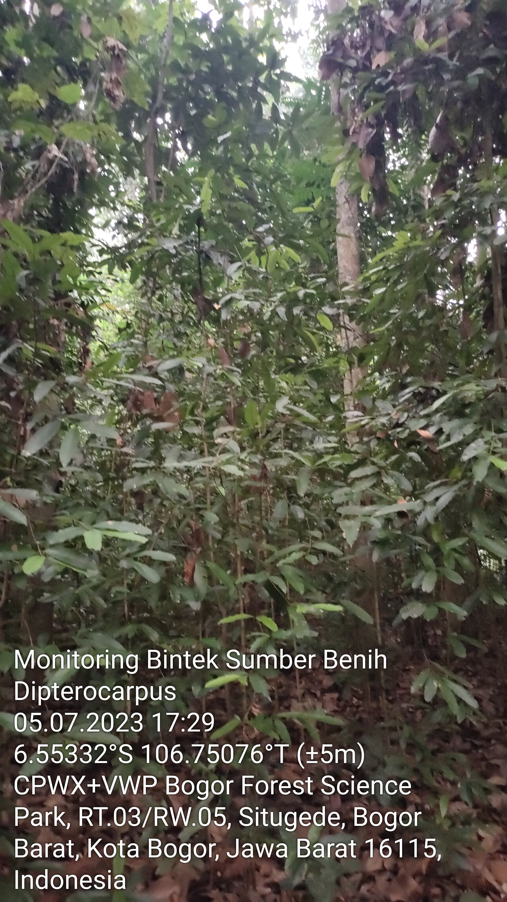
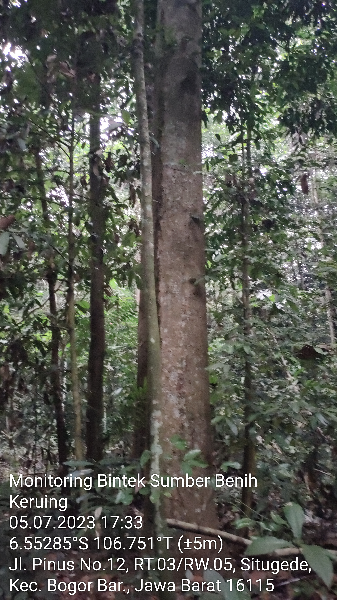
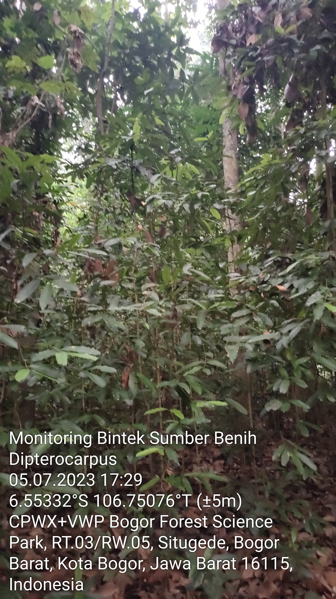
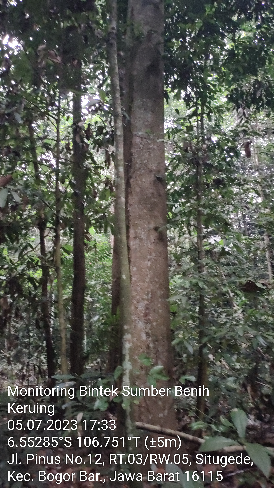

Nomor Sumber Benih
32.71.016
Nama Lokal
Keruing
Nama Botani
Dipteracarpus Retusus
Luas (Ha)
0,25
Kelas SB
TBT
Bioregion
Jawa Madura
UPT
BPDASHL Citarum Citarum
Provinsi
Jawa Barat
Kabupaten
Bogor
Kecamatan
Bogor Barat
Desa
Situgede
Garis Lintang
-6,544836
Garis Bujur
106,439994
Pemilik
Puslitbanghut KLHK
Alamat Pemilik
Jln. Gunung Batu,Bogor
Jenis Kepemilikan
Instansi Pemerintahan
Nomor Sertifikat Sumber Benih
522/016/S.SB-1/SPTH/2018
Tanggal Sertifikat Sumber Benih
20-April-2018
Masa berlaku Sertifikat Sumber Benih
20-April-2023
Jumlah Pohon
51
Musim Pembungaan
Oktober S/D Desember
Musim Buah Masak
Januari S/D Februari
Estimasi Produksi Benih
15.00 kg
Estimasi Jumlah Benih
Butir
Hasil Rata-Rata Pengunduhan/ Periode Panen
-
Pemanfaatan
-

